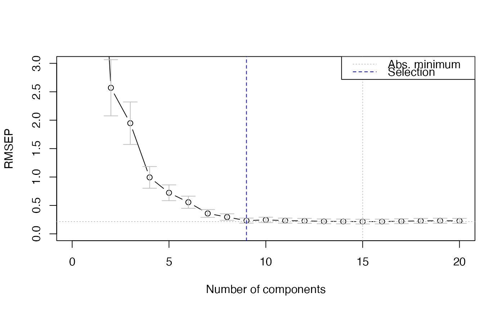
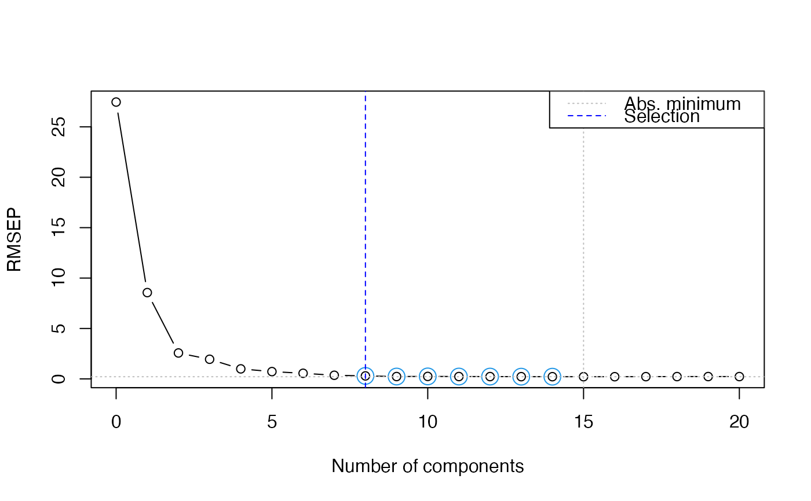
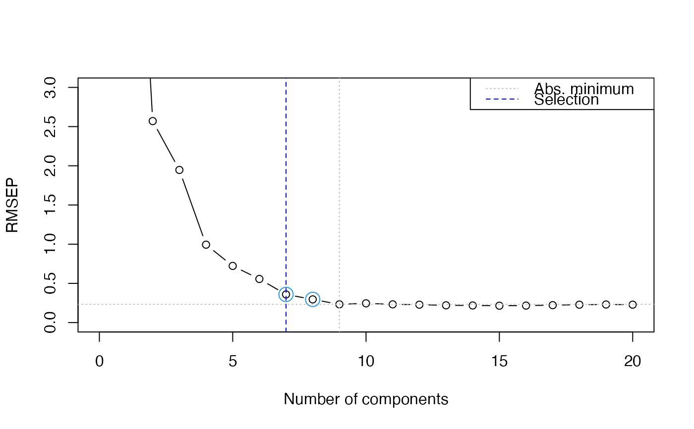

Suggestions for the optimal number of components in PCR and PLSR models
Source:R/ncomp.R
selectNcomp.RdChoosing the best number of components in PCR and PLSR models is difficult and usually done on the basis of visual inspection of the validation plots. In cases where large numbers of models are built this choice needs to be automated. This function implements two proposals, one based on randomization (permutation) testing, and an approach based on the standard error of the cross-validation residuals.
Usage
selectNcomp(
object,
method = c("randomization", "onesigma"),
nperm = 999,
alpha = 0.01,
ncomp = object$ncomp,
plot = FALSE,
...
)Arguments
- object
an
mvrobject. The fitted model. It should contain avalidationelement.- method
character string, indicating the heuristic to use.
- nperm
number of permutations in the
"randomization"approach - not used in the"onesigma"approach.- alpha
cutoff for p values in the
"randomization"approach - not used in the"onesigma"approach.- ncomp
maximum number of components to consider when determining the global minimum in the cross-validation curve.
- plot
whether or not to show a cross-validation plot. The plot for the
"randomization"approach shows models that do not differ significantly from the global RMSEP minimum with open circles; the"onesigma"approach shows the one-sigma bands around the RMSEP values. In both cases, the selection is indicated with a blue dashed line.- ...
Further plotting arguments, e.g., to add a title to the plot, or to limit the plotting range.
Details
In both approaches the results of cross-validation are used, so the model should have been calculated with some form of cross-validation. First, the absolute minimum in the CV curve is determined (considering only the first ncomp components), leading to the reference model. The randomization test approach (Van der Voet, 1994) checks whether the squared prediction errors of models with fewer components are significantly larger than in the reference model. This leads for each model considered to a \(p\) value; the smallest model not significantly worse than the reference model is returned as the selected one.
The approach "onesigma" simply returns the first model where the
optimal CV is within one standard error of the absolute optimum (Hastie,
Tibshirani and Friedman, 2009). Note that here we simply use the standard
deviation of the cross-validation residuals, in line with the procedure used
to calculate the error measure itself. Some other packages implementing
similar procedures (such as glmnet) calculate an error measure for
each validation segment separately and use the average as the final
estimate. In such cases the standard error across segments is the relevant
measure of spread. For LOO, the two procedures are identical. In other forms
of validation, small differences will occur.
References
Van der Voet, H. (1994) Comparing the predictive accuracy of models using a simple randomization test. Chemom. Intell. Lab. Syst. 25 (2), 313-323
Hastie, T., Friedman, J. and Tibshirani, R. The Elements of Statistical Learning: data mining, inference, and prediction, Springer (2013), 10th printing with corrections, paragraph 7.10.
Examples
data(yarn)
yarn.pls <- plsr(density ~ NIR, data = yarn, scale = TRUE,
ncomp = 20, validation = "LOO")
selectNcomp(yarn.pls, "onesigma", plot = TRUE, ylim = c(0, 3))

#> [1] 9
selectNcomp(yarn.pls, "randomization", plot = TRUE)

#> [1] 8
selectNcomp(yarn.pls, "randomization", plot = TRUE,
ncomp = 10, ylim = c(0, 3))

#> [1] 7